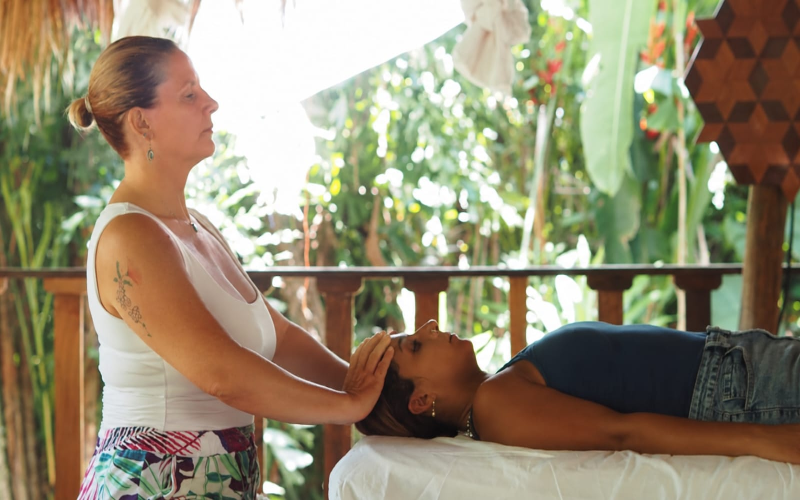

Durante tres años trabajé en el Hotel Vital Royal, en Seefeld, bajo la supervisión de médicos con un enfoque holístico. Esta experiencia me enseñó a mirar el cuerpo como un todo y, sobre todo, a escuchar a cada persona más allá de sus síntomas.
Mi búsqueda me llevó a Tailandia, donde profundicé en el masaje tailandés.
En el año 2000 conocí a mi maestra de Reiki, Despina Tzatarma, encuentro que abrió una nueva dimensión en mi camino de conciencia y energía.
Entre 2000 y 2008 viví en Italia, junto al Lago di Garda, donde nacieron mis hijos, Leo (2004) y Gabri (2007). En 2003 viajé a Kerala, India, acercándome al Ayurveda y a una visión ancestral del equilibrio entre cuerpo, mente y naturaleza.
En 2002 recibí mi segundo nivel de Reiki en Puerto Viejo, un lugar que con los años se convertiría en mi hogar. En 2015 me gradué de una Escuela de Metafísica en Puerto Viejo, profundizando en el estudio de la conciencia, la energía y la espiritualidad.
A lo largo de los años continué ampliando mi formación, incluyendo terapia craneosacral con Dan Springer. En 2021 me certifiqué como Reiki Master con Julie Hickey.
Hoy integro todo este recorrido en mi trabajo a través del masaje, la reflexología, el linfodrenaje, el masaje de tejido profundo, el masaje tailandés, la terapia craneosacral, Reiki, Ayurveda, metafísica y sound healing.
Pero más allá de las técnicas, mi trabajo nace de la presencia, la intuición y la escucha.
Creo que el cuerpo tiene su propio lenguaje. Cuando creamos un espacio seguro para detenernos, respirar y escucharnos, podemos comenzar a reconectar con nuestra propia capacidad de equilibrio y bienestar.
Después de casi tres décadas de aprendizaje, siento que mi mayor maestra ha sido la vida misma: cada lugar, cada encuentro, cada experiencia y cada persona que ha formado parte de este camino.
Rosario Lill Herrle
WhatsApp Rosario